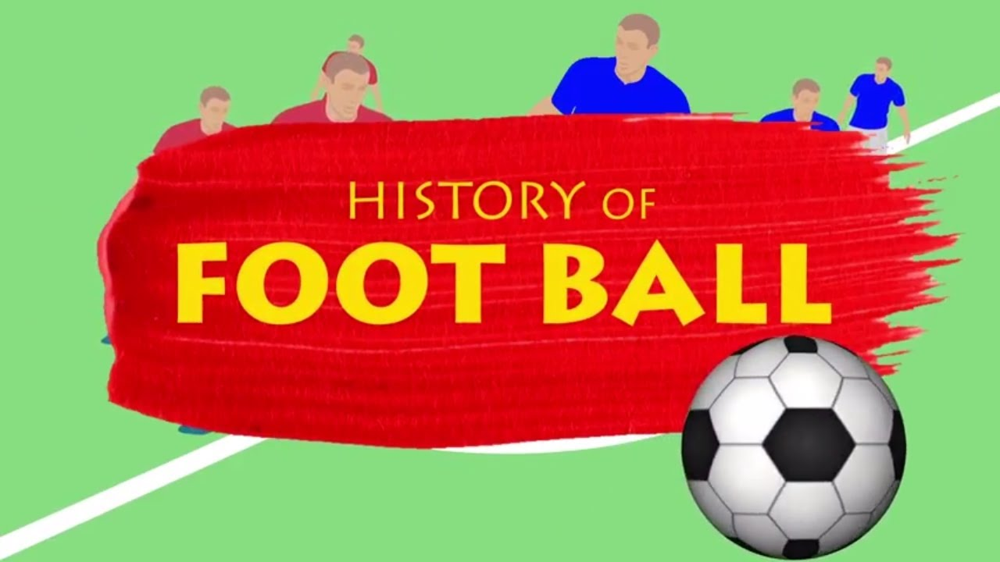

History of football
Football is a family of team sports that involve, to varying degrees, kicking a ball to score a goal. Unqualified, the word football normally means the form of football that is the most popular where the word is used. Sports commonly called football include association football known as soccer in North America and Oceania gridiron football specifically American football or Canadian football Australian rules football rugby union and rugby league and Gaelic football. These various forms of football share to varying extent common origins and are known as football codes. There are a number of references to traditional, ancient, or prehistoric ball games played in many different parts of the world. Contemporary codes of football can be traced back to the codification of these games at English public schools during the 19th century. The expansion and cultural influence of the British Empire allowed these rules of football to spread to areas of British influence outside the directly controlled Empire. By the end of the 19th century, distinct regional codes were already developing: Gaelic football, for example, deliberately incorporated the rules of local traditional football games in order to maintain their heritage. In 1888, The Football League was founded in England, becoming the first of many professional football associations. During the 20th century, several of the various kinds of football grew to become some of the most popular team sports in the world.
Etymology
There are conflicting explanations of the origin of the word football. It is widely assumed that the word football or the phrase foot ball refers to the action of the foot kicking a ball. There is an alternative explanation, which is that football originally referred to a variety of games in medieval Europe, which were played on foot. There is no conclusive evidence for either explanation.
Modern balls
In Europe, early footballs were made out of animal bladders, more specifically pig's bladders, which were inflated. Later leather coverings were introduced to allow the balls to keep their shape.However, in 1851, Richard Lindon and William Gilbert, both shoemakers from the town of Rugby near the school, exhibited both round and oval-shaped balls at the Great Exhibition in London. Richard Lindon's wife is said to have died of lung disease caused by blowing up pig's bladders. Lindon also won medals for the invention of the "Rubber inflatable Bladder" and the "Brass Hand Pump". In 1855, the U.S. inventor Charles Goodyear who had patented vulcanised rubber – exhibited a spherical football, with an exterior of vulcanised rubber panels, at the Paris Exhibition Universelle. The ball was to prove popular in early forms of football in the U.S. The iconic ball with a regular pattern of hexagons and pentagons see truncated icosahedron did not become popular until the 1960s, and was first used in the World Cup in 1970.